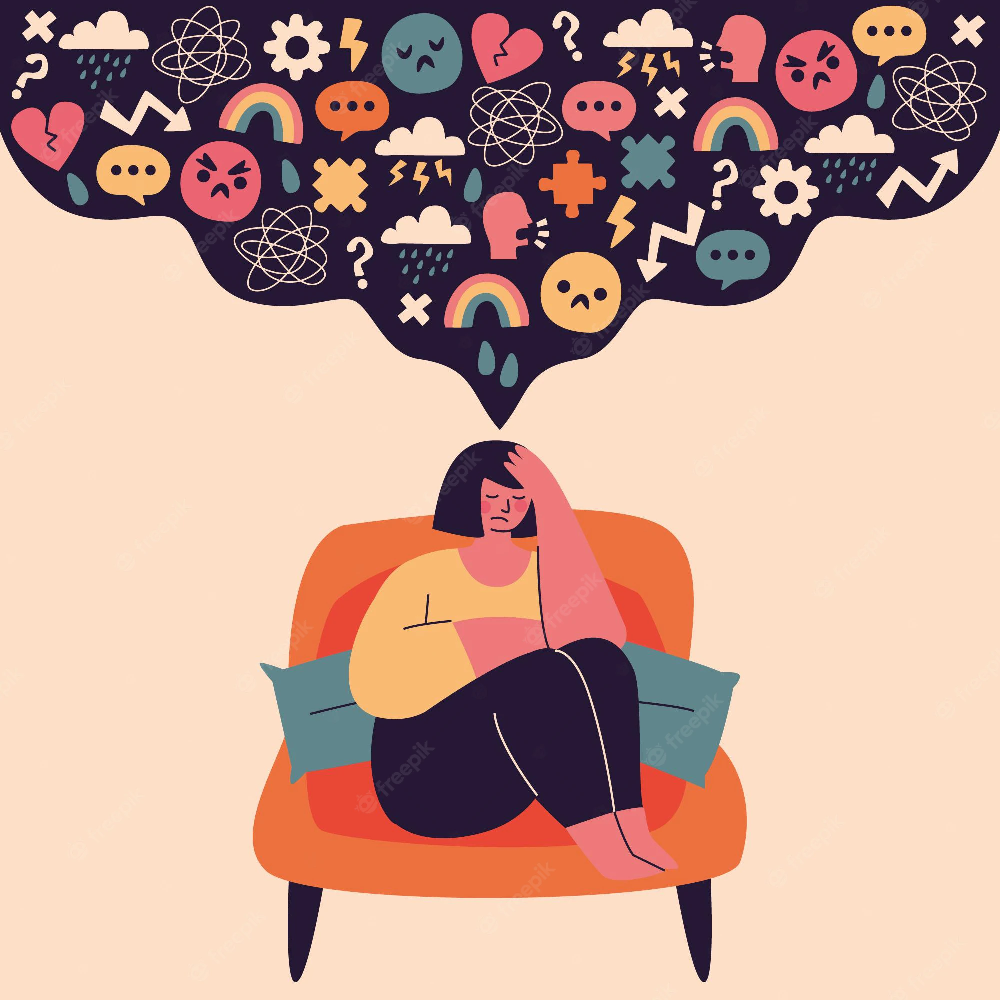

It was back in 2020, just as the first wave of pandemic started subsiding, my life entered a vortex of entropy. Family issues, professional shortcomings and personal botch-ups joined forces to deal one deafening blow after the other. By the time, life was done with its due course of the "Crucio" curse with me, I would wake up every day feeling suicidal and trying to find at least one reason to stay alive. Things went to a pretty bad extent where I even resorted to self-harm just in the hope that the pain would end. This is exactly when one of my friends suggested that maybe seeking professional help is a better option than just the mindless torment that I was inflicting on myself. After I sought out professional help, life started taking a turn for the ordinary. I won't say good because from waking up every morning with a strong death wish at the back of my head to at least willing to live, others would consider it ordinary - but for me it was a momentous shift. Slowly and steadily, things started taking a turn for the good. At the moment, I still suffer, but not to the extent that I did sometime back. I survived. Music and workouts helped massively. Books were my safe space during those nights when I struggled to fall asleep. All I can tell you is that this too shall pass. Maybe at this very moment you won't feel it. Maybe at this very moment, running away seems like the best possible solution, but at the end of it all, this too shall pass. Just hang in there. When everything feels too overwhelming, just take a shower. It may feel like a war, but all these small steps you take - they aren't anything short of fighting a war. Lots of love to anyone who has survived this and also to the ones who are struggling. Stay strong, you will heal.
You can explore more sections from the navigation bar on the onclick of this button.
Explore more